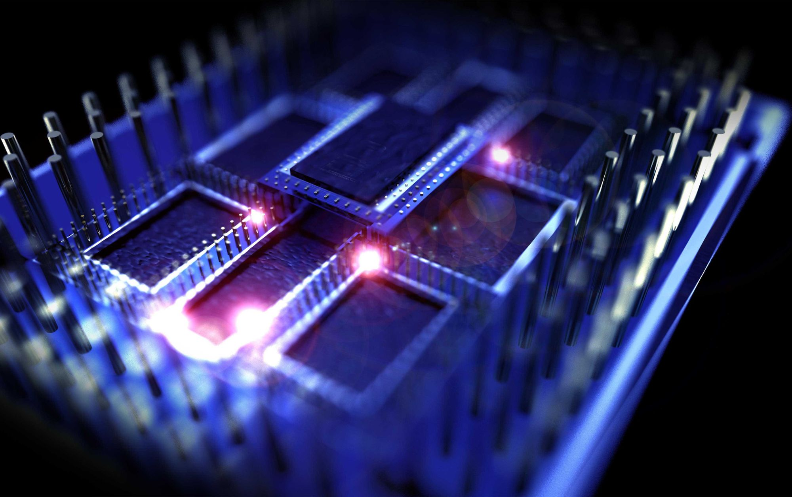

Оптический компьютер компании «Bell labs» Первый макет оптического компьютера был создан в 1990 году группой Алана Хуанга (Alan Huang) в Bell Labs и получил противоречивые отзывы.
DOC-II Следующий прототип 1991 года носил название «DOC-II» (англ. Digital Optical Computer — цифровой оптический компьютер). В нём использовалось 64 лазера, матричный пространственный модулятор размером 64х128 (элементы матрицы — ячейки Брэгга из фосфида галлия) и 128 фотодетекторов, оптическая схема могла выполнять умножение булевых векторов и матриц.
Оптический компьютер компании «Lenslet» Компанией «Lenslet» в 2003 году был продемонстрирован оптический DSP-процессор EnLight256. Особенностью его архитектуры является то, что, в то время как процессорное ядро основано на аналоговых оптических технологиях, все входы, выходы и управляющие схемы — электронные. Этот процессор способен выполнять, по заявлениям авторов, до 8×1012 элементарных операций над 8-битными целыми в секунду. 256 лазеров освещают пространственно-световой модулятор MQWSLM размером 256x256 ячеек (с электронным управлением), 256 фотодетекторов считывают аналоговый результат. Таким образом, процессор выполняет векторно-матричную операцию. Управляющая матрица MQWSLM может перенастраиваться на новые данные несколько миллионов раз в секунду.
